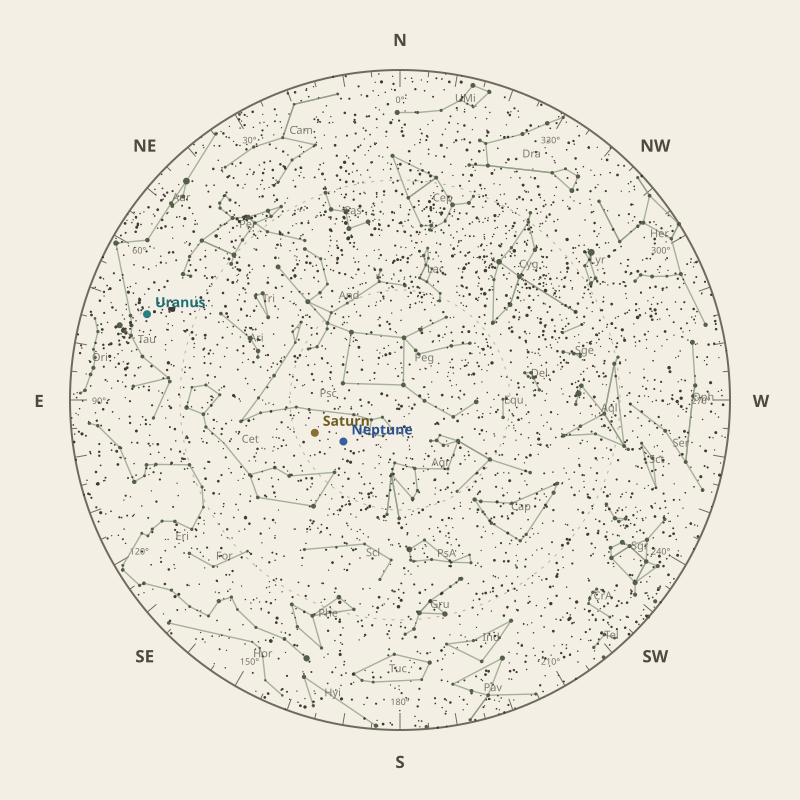

← Annual almanac
North is at the top; east is at the left. Solar System objects shown are above the horizon at 10 pm.
Monthly field almanac
October 2026


Saturn reaches opposition on 5 Oct 2026 and is highest around 12:30 am.
- New Moon
- 11 Oct Darkest skies
- Full Moon
- 26 Oct Brightest skies
- Best dark window
- 15 Oct 11h 23m
Current conditions
Checking the sky near Malabar Coast, India…
Sky chart: 15 Oct 2026, 10 pm
Malabar Coast, India local time.
Show static monthly chart

Night planner
Choose a date to see astronomical darkness, Moon interference, Galactic Centre visibility, and planet altitudes and times.
Best low-Moon dark periods this month
- 6:30 pm–5:54 am11h 23m · 20% Moon
- 6:31 pm–5:54 am11h 23m · 14% Moon
- 6:31 pm–5:54 am11h 22m · 8% Moon


Galactic Centre sessions
- 6:38 pm–9:38 pm3h 00m · core to 47°
- 6:38 pm–9:28 pm2h 50m · core to 46°
- 6:37 pm–9:27 pm2h 50m · core to 46°
Events
- HIP 18046 lunar occultation12:27 am; Moon at 42° altitude for the first listed contact.
- HIP 18201 lunar occultation12:52 am to 2:08 am; Moon at 47° altitude for the first listed contact.
- Mercury greatest eastern elongationEvening sky; 25.2° from the Sun.
October highlights
- Planets
Neptune
Best monthly date at 79° altitude.
- Occultations
HIP 18106 lunar occultation
12:05 am to 12:33 am; Moon at 37° altitude for the first listed contact.
- Milky Way
Milky Way core window
3h 00m with 47° altitude.
- Planetary events
Saturn opposition
Visible for most of the night.
- Meteor showers
Orionids
Peak conditions: 71% Moon illumination; 77° altitude predawn.


Moon phases
82%
14%
20%
80%
92%
For faint deep-sky objects, observe when the Moon is below the horizon or weakly illuminated. For lunar relief, observe near the terminator; full Moon is best suited to ray systems and albedo features.
Download Moon phase CSV →

Planet visibility
Evening
- Venus2 Oct · 6:30 pm15° · Fair
- Mercury6 Oct · 6:30 pm14° · Poor
 Venus
Venus Mercury
MercuryOvernight
- Saturn2 Oct · 12:30 am81° · Excellent
- Uranus31 Oct · 2:00 am80° · Excellent
- Neptune1 Oct · 12:00 am79° · Excellent
 Saturn
Saturn Uranus
Uranus Neptune
NeptunePredawn
- Mars31 Oct · 6:00 am71° · Excellent
- Jupiter31 Oct · 6:00 am66° · Excellent
 Mars
Mars Jupiter
Jupiter